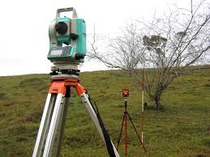

Definición
La topografía (del griego τόπος, ‘lugar’, y «-grafía», ‘descripción’) es la ciencia que estudia el conjunto de principios y procedimientos que tienen por objeto la representación gráfica de la superficie terrestre, con sus formas y detalles; tanto naturales como artificiales; (véase planimetría y altimetría). Esta representación tiene lugar sobre superficies planas, limitándose a pequeñas extensiones de terreno, utilizando la denominación de «geodesia» para áreas mayores. De manera muy simple, puede decirse que para un topógrafo la Tierra es plana (geométricamente), mientras que para la geodesia no lo es. Para eso se utiliza un sistema de coordenadas tridimensional, siendo la x y la y competencia de la planimetría, y la z de la altimetría. Los mapas topográficos utilizan el sistema de representación de planos acotados, mostrando la elevación del terreno utilizando líneas que conectan los puntos con la misma cota respecto de un plano de referencia, denominadas curvas de nivel, en cuyo caso se dice que el mapa es hipsográfico. Dicho plano de referencia puede ser el nivel del mar, y en caso de serlo se hablará de altitudes en lugar de cotas.
